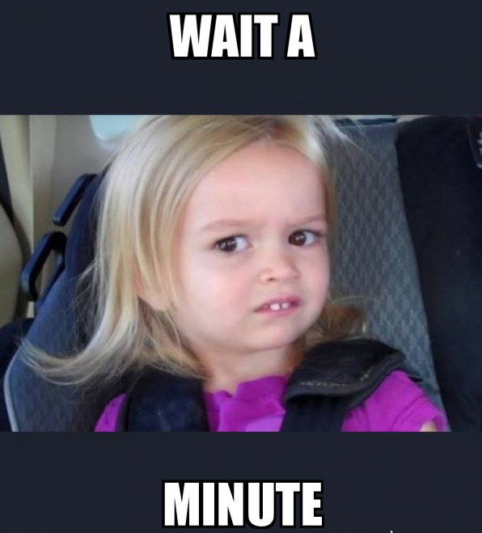
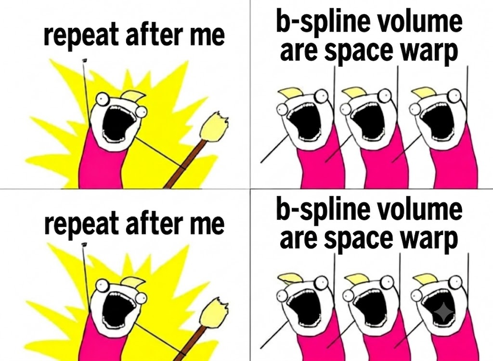
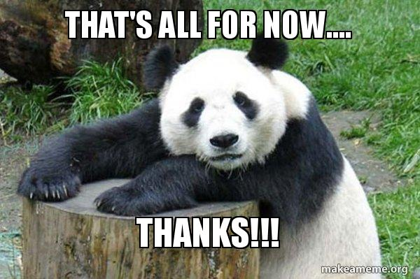

1 1D B-splines in detail
If you are reading this blog, you must be familiar with B-splines, mostly in context of curve fitting. This section is a quick refresher and a buildup for extending it to 3D.
The goal is to draw a smooth curve through space that you can control locally.
You have a set of handles (control points). Move one handle and a nearby section of the curve follows. The rest of the curve stays put. The curve is always smooth, always well-behaved, no matter how many handles you have.
Control points, the handles
Let's start simple. Place 4 points anywhere in 2D space and call them P₁, P₂, P₃, P₄. Remember, these are not points on the curve. They don't sit on it. They pull it, like magnets. The curve bends toward them but never has to touch them.
Now we need a way to talk about position along the curve. We introduce a parameter u ∈ [0, 1] and think of it as a dial. At u = 0 you're at the start of the curve. At u = 1 you're at the end. Anywhere in between, you're somewhere along it.
So what is the curve point at a given u? It's just a weighted average of the control points:
Basis functions
So we have the formula curve(u) = N₁(u)·P₁ + N₂(u)·P₂ + N₃(u)·P₃.
Each Nᵢ(u) is a smooth bump centered at control point i. It peaks near its control point's region, fades to zero as you move away, and is zero outside its local territory. If a basis function is zero at u, that control point has no say in where the curve goes at u.
For degree 2 with 3 control points, the basis functions turn out to be the binomial expansion of ((1−u) + u)²:
At u = 0, N₁ = 1 and everything else is zero — the curve starts exactly at P₁. At u = 1, N₃ = 1 — it ends at P₃. At u = 0.5, N₂ peaks and dominates — the curve is pulled hardest toward P₂. The curve always gravitates toward whichever control point owns that region of parameter space.
This is the core mechanic. The basis functions are just a smooth handoff of influence from one control point to the next as u travels from 0 to 1.
The knot vector
Here is the problem. Three control points gave us one smooth arc. But what if you want a long, complex curve with many control points? You could fit one giant high-degree polynomial through all of them, but that leads to Runge's phenomenon: wild oscillations and numerical instability.
The B-spline solution is much smarter. Instead of one big polynomial, stitch together, for example, many small cubic pieces, each controlled by just 4 nearby points. The knot vector is simply the schedule that tells you where each piece starts and ends along the u axis.
For 6 control points, degree 3, a uniform knot vector looks like:
Let's read this out loud. The four 0s at the start and four 1s at the end are repeated on purpose. They pin the curve so it starts exactly at P₁ and ends exactly at P₆. Without them the curve would float away from its endpoints.
The interior values 0.33 and 0.66 are just mile markers on the u axis. They are not control points. They have no position in space. They simply say: segment 1 runs from u = 0 to u = 0.33, segment 2 from 0.33 to 0.66, segment 3 from 0.66 to 1. That is all a knot vector does.
Here is a concrete example. Say you are evaluating the curve at u = 0.4. You look at the knot vector and ask: which span does 0.4 fall in? It falls between 0.33 and 0.66, so you are in segment 2. Now, which control points govern segment 2? The rule is simple: for degree 3, each segment uses exactly 4 consecutive control points starting at the span index minus the degree. Segment 2 is the second active span, which sits at index 4 in the knot vector (counting from 0). So the starting control point is index 4 minus 3 = 1, giving us P₂, P₃, P₄, P₅ (1-indexed). That is the only information the knot vector gives you - which four control points to use.
Where do the weights come from?
So far we have used the basis functions N₁(u), N₂(u), N₃(u) as if they just exist. For 3 control points and degree 2, we could write them out as closed-form polynomials. But what happens when you have 6, 10, or 100 control points? You need a general algorithm that computes the right weights for any u. That algorithm is the Cox-de Boor recursion.
The idea is to build the smooth bump functions from scratch, starting from something extremely simple and refining it step by step. Here is how it works.
The key thing to notice is that each extra round of blending does two things simultaneously: it spreads influence to one more neighbouring control point, and it smooths the function by one degree. That is why degree and local support are directly linked. A degree-2 spline always has at most 3 active control points at any u. A degree-3 spline always has at most 4. You cannot get more smoothness without also getting slightly wider influence.
Putting it all together: computing the curve
Given a query u, the full algorithm is four lines of logic:
# Given: u ∈ [0,1], control_points list of (x,y) positions # 1. Compute basis weights via Cox-de Boor weights = bspline_basis(u, n_ctrl=4, degree=2) # shape (4,) # 2. Weighted average of control points curve_point = sum(w * P for w, P in zip(weights, control_points)) # 3. Repeat for many u values → the full curve curve = [compute(u) for u in np.linspace(0, 1, 200)]
2 Extending to 3D
Going from 1D to 3D sounds intimidating. It isn't. The jump is applying the exact same 1D operation three times independently, once per axis.
Wait. What does a 3D spline even mean?

Before touching the math, let's make sure the goal is clear. Each dimension of spline buys you one extra dimension of output. The pattern is consistent:
| Spline type | Input parameters | What you get | Analogy |
|---|---|---|---|
| 1D spline | u | A curve through space | A wire bent by handles |
| 2D spline | u, v | A curved surface (shell) | A rubber sheet stretched over a frame |
| 3D spline (volume) | u, v, w | A warp of solid space | A rubber cube you can squeeze and stretch |
In 1D and 2D, the spline is the shape you care about. You're fitting a curve or a surface to data.
In 3D, the spline wraps around a shape you already have. You're not fitting a 3D solid. You're defining a smooth warp of the entire space inside the cage, and your mesh rides along inside it.
Think of it like this: a 1D spline tells you where a point on a wire ends up. A 3D spline tells you where every point inside a cube ends up after deformation.
You have scattered 3D points on a bumpy surface (say, a hillside). A 2D spline fits a smooth curved shell through or near those points. The output is a 2D manifold embedded in 3D space. You care about the shell itself.
You have a mesh sitting inside a cage. A 3D spline defines how the entire interior of that cage deforms. The output is a new position for every point inside the cage. You care about what happens to the mesh inside it.
The dashed polygon connects control points. The blue curve is pulled toward them without touching them. Drag any red dot to see the curve reshape instantly.
First, let's go to 2D: a surface
Before jumping to 3D volumes, let's do 2D first. The goal here is different from 1D. In 1D we drew a curve through space. In 2D we want to fit a curved surface to a set of 3D points. Think of a bumpy hillside, or a car hood, or a face. You have a cloud of 3D points and you want a smooth sheet that approximates them.
The way B-splines handle this is elegant. Instead of one row of control points, you now have a grid of control points indexed by (i, j). And instead of one parameter u, you now have two: u and v. Together (u, v) is your address on the surface, just like latitude and longitude on a globe.
So how do you evaluate the surface at a given (u, v)? You just apply the 1D B-spline twice, once per axis:
Notice what just happened. We did not invent anything new. We just applied the exact same 1D operation twice, once along v to collapse rows, once along u to collapse the resulting column. The 2D formula fell out automatically. That pattern is exactly what we will repeat one more time to get to 3D.
Now 3D a volume
Add a third parameter w and a third layer of control points. Apply 1D B-spline three times:
The key property: control point P[i,j,k] only has non-zero weight if all three axis distances are simultaneously small. If the query is far from index i along just the u-axis, the whole weight collapses to zero. This is local support in 3D.
Nⱼ(v): "How close is v to control point j along the y-axis?"
Nₖ(w): "How close is w to control point k along the z-axis?"
Multiply the three answers. Miss on any one → zero influence. Hit all three → strong influence.
4 control points. One parameter u. At any u, at most 3 control points contribute (for degree 2).
4×4×4 = 64 control points. Three parameters u,v,w. At any (u,v,w), at most 3×3×3 = 27 control points contribute.
3 The sphere example

The rubber cube analogy
Imagine your sphere mesh sitting inside a rubber cube. The 4×4×4 lattice of control points is a cage of 64 handles on the surface of that rubber cube. When you move handles, the rubber cube stretches and everything inside it (including the sphere vertices) moves along with it.
The B-spline volume is the mathematical description of how the rubber deforms. For each sphere vertex:
Variable: the (x,y,z) position of each control point in 3D space this is what the encoder predicts per-person in CUBE.
Each slider shifts an entire plane of control points along its axis. Moving X-plane 0 and X-plane 3 apart stretches the sphere. Mixing axes creates squash-and-stretch effects.
Why cage-based, not direct vertex editing?
A sphere mesh has 400 vertices. Moving all 400 by hand is tedious, error-prone, and produces no smoothness guarantees. The B-spline cage has only 64 control points and moving any one of them smoothly and automatically propagates to the right subset of nearby vertices, with mathematically guaranteed continuity.
| Direct vertex editing | B-spline cage | |
|---|---|---|
| Handles to move | 400 (one per vertex) | 64 (4×4×4 cage) |
| Smoothness | Not guaranteed | Guaranteed by math |
| Local control | Yes but tedious | Yes and automatic |
| Different shapes | Completely different vertex lists | Just different control point positions |
